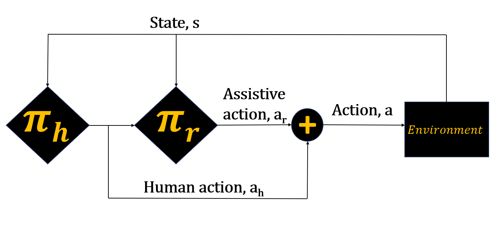

Shared Autonomy with Reinforcement Learning
Overview
blaaaaaaaaaaaaaaaaaaaaaaaaaaaaaaaaaaaaaaaaaaaaaaaaaaaaaaaaaaaaah
Blahhhhhhhhhhhhhhhhhhhhhhhhh
Data Pipeline and Neural Network Architecture
Lunar Lander
The mediapipe's gesture recognition repository was re-trained for the gestures relating to grasping hand motions to the desired robot hand configuration. For this purpose 2 ROS python nodes were employed, where the ros2_hgr node estimates the gesture for a give hand pose and publishes an id corresponding to that gesture. The other node gets the id and relates it to previously tested and defined hand configuration.
This fork was trained for 7 gestures namely, open, close, pinching with index and middle finger, grasping with 3 fingers and 4 fingers and pointing with the index finger.
Franka Panda
Finger_tracking is a ROS 2 python node which uses mediapipe’s hand recognition framework to calculate each of the joint angles of the hand configuration by mapping each joint position to x, y, z in 3D space as shown in the figure above. After applying some simple geometry the angles obtained are retargeted to the 16 robot joints and mapped according to the joint limits. These angles are then published for the motion control section of the process.
Franka with Multiple Goals
Allegro_lib is a C++ library compiled to allow the use of Allegro Hand in ROS 2. The allegro_driver uses this library to control the robot hand PD controller and send joint angles for each of the angles. In order to get proper waypoints for a desired trajectory to be executed keeping self collision and joint limits in mind, I configure the Allegro Hand with Moveit!. This allowed for visualization of the resulting joint trajectories and the use of ros controller to calculate the closest viable solutuion to joint angles received from the perception nodes.
Results

Know more about this project at this github link .
- © Untitled
- Design: HTML5 UP